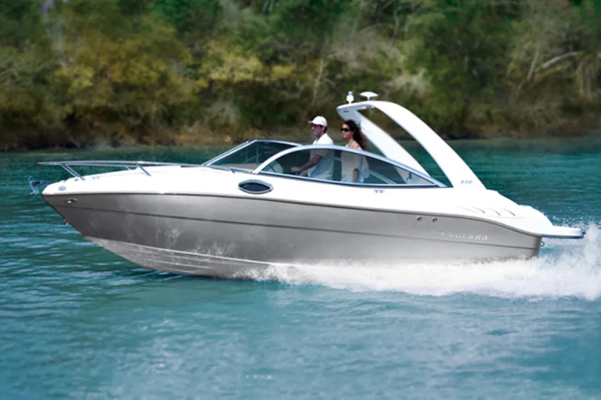

Solara 235
Lancha Solara · Open e GT
Preço sob consulta

Lancha de 7,35 m, rebocável em carreta, com motor único de 200 a 250 hp a gasolina. A versão Open tem banheiro fechado com vaso sanitário. A GT acrescenta cama de casal na proa, guincho elétrico e ventilador de cabine.
Ficha técnica
| Versões | Open e GT |
|---|---|
| Comprimento | 7,35 m |
| Boca máxima | 2,40 m |
| Calado | 0,50 m |
| Passageiros | 7+1 |
| Peso aproximado, sem motor | 830 kg |
| Tanque de combustível | 175 L |
| Tanque de água doce | 60 L |
| Altura da cabine | 1,30 m |
| Altura na carreta, com targa | 2,85 m |
| Ângulo de V na popa | 22° |
| Motorização | 1 x 200 a 250 hp, gasolina |
Itens de série em destaque
- Targa com iluminação em LED
- Plataforma de popa integrada e escada telescópica de 3 degraus em aço inox 316
- Solário lateral e solário de popa
- Teca em EVA no cockpit, na plataforma e na proa
- Som com 4 alto-falantes
- Cristaleira com iluminação em LED
- Hidráulica completa
- Estofaria interna e externa em courvin antimofo
- GT: cama de casal de proa, guincho elétrico de 600 W e vigia elíptica
Itens opcionais
- Carreta rodo encalhe
- Churrasqueira em cuba com pedestal
- Farol com controle remoto
- GPS 7" com sonda
- Placa solar T-top (GT)
- Rádio VHF com antena
- Sistema anti-cracas
Imagens ilustrativas. As informações podem mudar; confirmar com a Nautica Motors.
Nautica Motors, revendedor autorizado Solara em Belém.